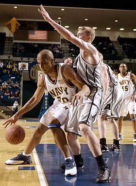

=
Baschetul este unul dintre cele mai răspândite sporturi de echipă din lume; se caracterizează prin finețea, precizia și fantezia exercițiilor tehnice și tactice, prin talia înaltă și calitățile fizice deosebite ale sportivilor, toate acestea implicate într-o luptă sportivă care pretinde spirit de echipă și de sacrificiu, inteligență și rezistență nervoasă.
